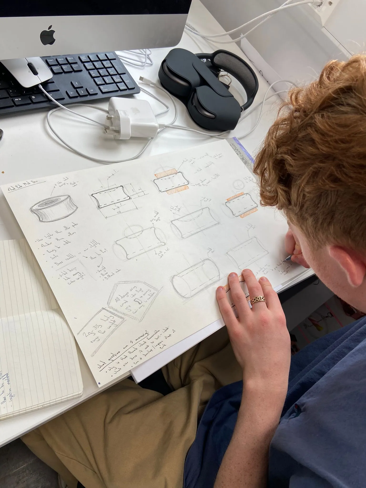
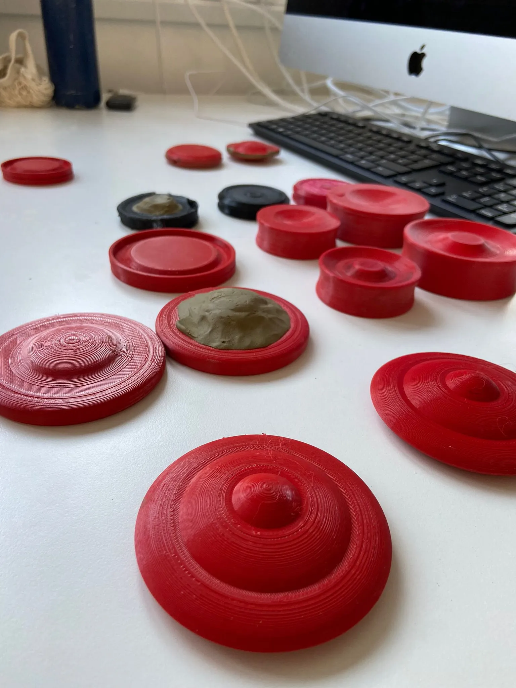
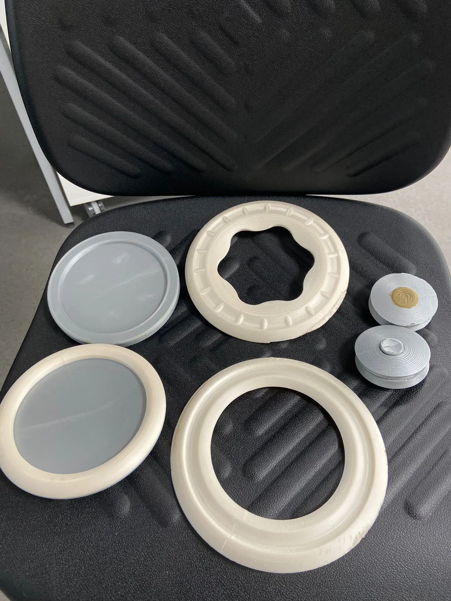
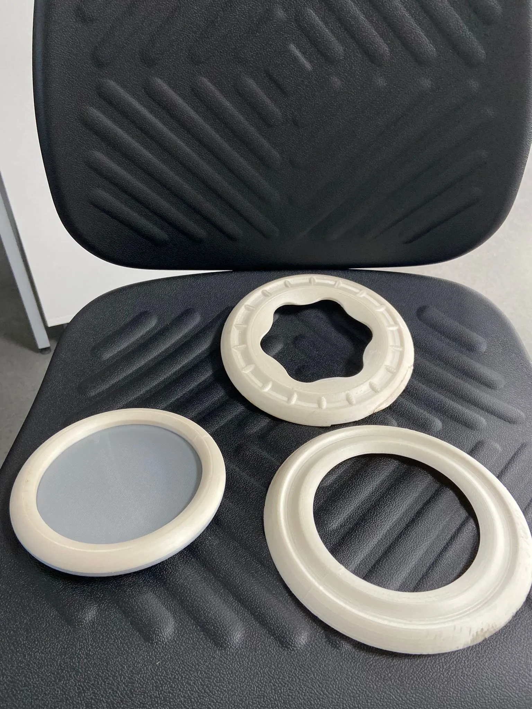

Industrial Design · Product · DFM — 2022
A low-cost flying toy engineered for injection moulding. Thirty prototypes in three days. Production-ready design.
The problem
A flying toy has to be aerodynamic and cheap to injection-mould, and the geometry that makes one true tends to make the other impossible.
What I made
A radially symmetric form that flies by symmetry rather than by wing profile — so the tooling stays simple.
What made it hard
The whole project is one tension held in tooling. Every constraint below pulls against flight, and none of them was negotiable.
The turn
Early testing showed that radially symmetric forms — discs, rings, boomerang profiles — reach consistent flight through symmetry alone, without the complex asymmetric wing profile a traditional frisbee needs. Symmetry cuts the number of variables, simplifies the tooling geometry and makes flight predictable at the same time. After that every formal decision had one of two jobs: improve flight, or make the mould cheaper. Anything that helped one and hurt the other had to earn its place through testing rather than assumption.
The Process
Research & Ideation
Early exploration mapped how changes in geometry affected flight — edge thickness, chord width, weight distribution, spin axis. Collaborative sketching with the team ran alongside solo CAD modelling to test assumptions before committing to physical material. The goal was to fail fast and cheaply — in software, not plastic.
Rapid Prototyping — 30+ forms in 3 days
3D printing in PLA was the test bed. Over 30 prototypes across three days — each one a small variation in profile, edge taper, or diameter. Testing with university students and staff assessed flight consistency, catchability, and safety. Not a lab test — just repeated throws across a corridor, which is exactly the use case. Insights from each throw fed back directly into the next CAD iteration.
CAD Refinement & DFM
As the form converged, CAD geometry was reworked for injection moulding. Undercuts removed. Part geometry simplified. Wall thicknesses rationalised to maintain structural integrity while minimising material use. The brand mark was resolved into a surface feature that didn't require a separate tool insert. Each change was checked against both flight test data and mould cost logic.
Final Render & Handover
High-resolution KeyShot renders and fully resolved CAD files were prepared to communicate design intent to a toolmaker. These were the production-ready deliverables — everything a manufacturer needed to start cutting tool steel. The studio closed before that conversation took place.
Manufacturing Constraints — every decision filtered through these
Recycled plastic only — material cost ceiling tied to £10 retail
1–2 part injection mould — no side actions, no undercuts
Simple, symmetric geometry — manufacturable without specialist tooling
Safe flight path — no sharp edges, consistent behaviour for casual users
Brand integration — resolved into surface geometry, no added tooling cost

Sketch 01 — initial ideation Refined sketch — flight profile
Refined sketch — flight profile
 Field sketch — outdoor testing
Field sketch — outdoor testing
 CAD — boomerang profile
CAD — boomerang profile
 CAD — pin joint detail
CAD — pin joint detail
 CAD — branding integration
CAD — branding integration
 PLA — full prototype batch
PLA — full prototype batch

PLA — form variations
PLA — late-stage iterations
In hand — final form In hand — branding
In hand — branding
 In hand — edge profile
In hand — edge profile
The shapes that fly well are exactly the shapes that make injection moulding expensive. The project was about resolving that. — Project 261, TwoSix Design, 2022
Studio context: TwoSix Design closed due to financial difficulties before THUDPUK entered production. The design reached production-ready stage — resolved CAD, KeyShot renders, DFM-compliant geometry, brand integration complete. The same internship also delivered Project 262 — Greene King Ceramics, a 40-unit slip-cast tableware commission completed within the same period.
Specification
| Brief | Low-cost flying toy. £10 retail. Recycled plastic. Injection mould, 1–2 parts. Safe, consistent flight. |
| Role | Research, ideation, CAD development, rapid prototyping, DFM engineering, render delivery. |
| Prototyping | 30+ PLA 3D-printed forms over 3 days. Informal user testing with staff and students. |
| CAD | Full 3D model refined for injection moulding. Undercuts removed, geometry simplified, brand mark integrated. |
| Renders | High-resolution KeyShot outputs prepared for tooling conversation and client presentation. |
| Outcome | Production-ready design. Studio closed before manufacture commenced due to financial difficulties. |
| Studio | TwoSix Design, Aberdeen — Product Design Internship, 2022. |
Where it landed
The final form hit the brief — manufacturable geometry, predictable flight, and TwoSix branding resolved into the surface with no additional tooling complexity. High-resolution CAD and KeyShot renders were prepared to support tooling conversations. The design was production-ready; TwoSix Design folded due to financial difficulty before it got there.
What it unblocked
The symmetry finding is the transferable part, and it outlived the studio. It converts an aerodynamics problem into a tooling problem with fewer variables — a rule, not a result — and it applies to any spun or thrown toy that has to survive a real mould-cost conversation.